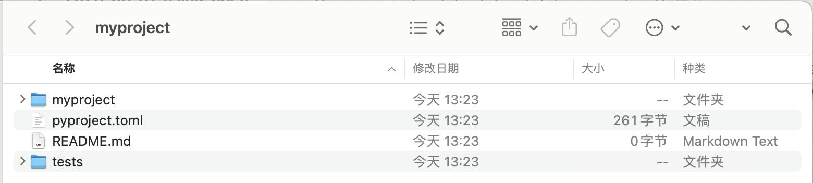
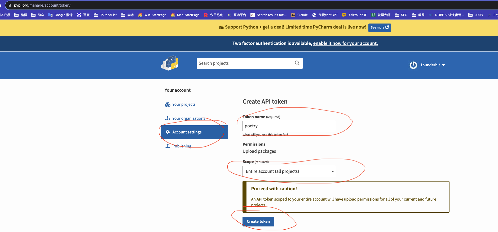

一、介绍
Poetry 是一个用于管理 Python 项目的工具，它的主要用途包括以下几个方面：
- 依赖管理：Poetry 可以帮助您管理项目的依赖项。您可以使用 Poetry 来定义项目的依赖项，包括 Python 版本和其他 Python 包，然后 Poetry 会自动安装和管理这些依赖项。这有助于确保项目在不同环境中具有一致的依赖项。
- 包管理：Poetry 可以帮助您构建和发布 Python 包。它能够生成标准的分发文件，如 wheel 和 sdist（源分发文件），以便您可以轻松地分享和分发您的包。此外，Poetry 还支持发布包到 PyPI（Python 包索引）等包仓库。
- 虚拟环境管理：Poetry 可以自动创建和管理虚拟环境，以确保项目的依赖项不会干扰全局 Python 环境或其他项目的环境。这有助于隔离项目之间的依赖关系，使项目更加稳定和可维护。
- 项目配置：Poetry 使用一个易于编辑的配置文件（pyproject.toml）来定义项目的元信息、依赖关系和其他配置。这使得项目配置变得更加直观和可读。
- 版本管理：Poetry 支持版本控制，可以帮助您管理项目的版本号。您可以在项目配置中指定版本号，并根据项目的进展逐渐升级版本。
- 脚本管理：Poetry 允许您定义和运行自定义脚本，以简化项目的常见任务，如测试、构建、文档生成等。
- 依赖解析：Poetry 使用一种智能的依赖解析算法来确保项目的依赖项解析不会导致冲突或不一致性，同时尽量满足依赖项的约束条件。
总之，Poetry 是一个功能强大的 Python 项目管理工具，可以帮助开发人员更轻松地管理项目的依赖项、构建和发布 Python 包，以及管理项目的配置和版本。它提供了一种现代化的方式来处理 Python 项目的工程化和依赖管理。
今天主要分享
- 如何使用poetry创建项目环境
- 如何使用poetry打包自己的python库
二、创建项目环境
创建一个项目(或库)的虚拟环境，现在用poetry从0开始配置。首先安装poetry，在cmd执行
pip3 install poetry
2.1 创建新项目
打开cmd， 切换至桌面(大邓喜欢在桌面做事，也简单好记)
cd desktop
poetry new myproject
这样在桌面新生成了一个cntext项目文件夹， 该项目的文件目录树结构
myproject
|--- __init__.py
poetry.lock
pyproject.toml
README.md
tests
|--- __init__.py

2.2 切换至项目目录
在cmd中将当前工作目录切换至myproject项目内
cd myproject
2.3 创建虚拟环境
在myproject项目内创建python3虚拟环境，cmd中的执行命令如下
poetry env use python3
这会创建一个名为 python3 的虚拟环境并激活它。 例如大邓的Python是3.11.5，则pyproject.toml内会有
[tool.poetry.dependencies]
python = "^3.11"
表示poetry依赖于大邓电脑中的python3.11环境。
2.4 定义依赖项
项目myproject是要做一些事的，假设myproject是要做与cntext库类似的事情，需要依赖的包有
jieba、numpy 、mittens、scikit-learn、matplotlib、pyecharts、gensim、nltk、pandas、 chardet、 h5py 。
这时候我们需要在 myproject.toml 中加入
[dependencies]
python = "^3.5"
jieba = "^0.4.1"
numpy = "^1.21.0"
mittens = "^0.2"
scikit-learn = "^1.3.0"
matplotlib = "^3.6.0"
pyecharts = "2.0.0"
gensim = "^4.2.0"
nltk = "^3.8"
pandas = "^1.5.0"
chardet = "^5.0.0"
h5py = "^3.9.0"
表示如果其他用户使用myproject这个项目，至少要保证python是3.5及以上版本， 依赖的库有jieba、numpy 、mittens、scikit-learn、matplotlib、pyecharts、gensim、nltk、pandas、 chardet、 h5py ， 以jieba为例， jieba要满足0.4.1及以上版本。
2.5 安装依赖项
在虚拟环境中，使用以下命令安装项目的依赖性。在cmd中执行命令
poetry install
Poetry 会根据 pyproject.toml 文件中的定义自动下载和安装依赖项。
需要注意，有时候也可以在虚拟环境中使用
poetry add '依赖包名'
poetry remove '依赖包名'
来增加或移除依赖包
2.6 使用虚拟环境
现在，您的项目已经创建并配置好了虚拟环境。您可以使用以下命令激活虚拟环境：
poetry shell
一旦虚拟环境被激活，您可以在其中运行 Python 解释器和项目依赖的命令。
2.7 退出虚拟环境
要退出虚拟环境，只需在虚拟环境中运行以下命令：
exit
这会将您带回到全局 Python 环境。
以上是一个基本的 Poetry 虚拟环境的创建和使用教程。
三、打包Python库
「打包Python库」的步骤与 「创建项目环境」 有很多类似的地方
3.1 创建新项目
首先，创建一个新的 Python 库项目或使用现有的项目。确保项目的根目录中包含一个 pyproject.toml 文件来配置项目和依赖项。
3.2 添加项目元信息
在 pyproject.toml 文件中，确保包含了项目的元信息，包括名称、版本、作者、许可证等。以下是一个示例：
[tool.poetry]
name = "my-library"
version = "1.0.0"
description = "My Python library"
authors = ["Your Name <your@email.com>"]
license = "MIT"
readme = "README.md"
请根据您的项目需求修改这些元信息。
3.2 定义依赖项
使用 [tool.poetry.dependencies] 部分来定义您的库项目的依赖项。确保列出所有依赖项及其版本约束。
3.3 创建库代码
编写您的库代码并将其组织到适当的目录中。通常，库代码会位于项目根目录下的一个包目录中。
3.4 测试您的库
编写测试用例来验证您的库的功能。测试文件通常会位于一个独立的测试目录中，并使用测试框架（如 pytest）来运行测试。
3.5 构建和验证
在项目根目录中运行以下命令来构建您的库：
poetry build
这将生成一个 dist 目录，并在其中包含库的分发文件，包括 wheel 和 sdist（源分发文件）。
3.6 发布到 PyPI
-
注册 PyPI 帐户：如果您还没有 PyPI 帐户，请先注册一个。
-
在poetry中设置PyPi的api-token信息：首先登录PyPi， 点击Accounting settings, 如截图所示创建你的api-token。

在终端中运行以下命令，使用您的 PyPI 帐户登录：
poetry config pypi-token.pypi your-api-token
这将要求您输入 PyPI 用户名和密码。
- 发布到 PyPI：运行以下命令来发布您的库到 PyPI：
poetry publish
这会自动构建您的库并将其发布到 PyPI。请注意，不要随便发布， 先检查所有代码是否能正常运行，之后再发布。
3.7 分享您的库
现在，您的库已经发布到 PyPI，其他人可以使用 pip install 命令来安装它。您可以分享您的库的 PyPI 链接，以便其他人找到和使用它。
这些步骤简要介绍了使用 Poetry 打包和发布 Python 库的过程。确保在发布之前测试您的库，并在 README.md 中提供必要的文档和示例，以帮助其他人使用您的库。